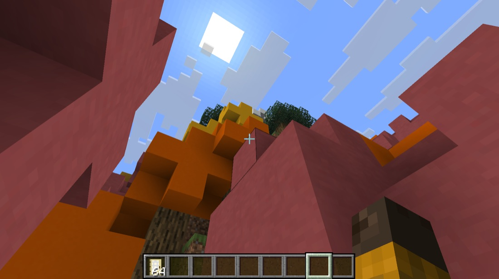
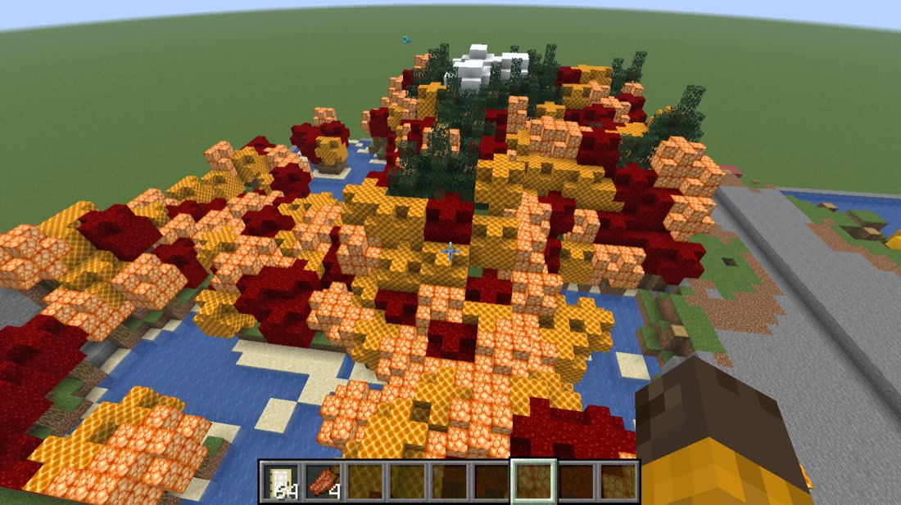
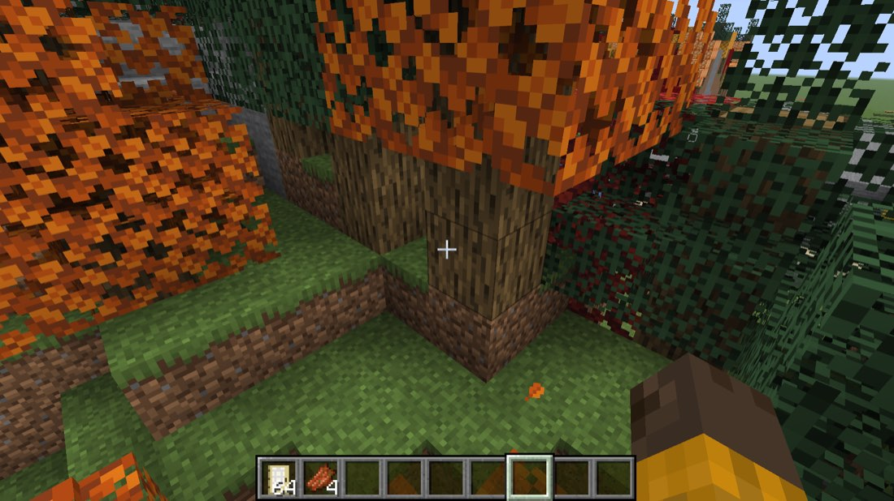

← マインクラフトで試してみた (5 / 7)
5. 秋の風景を置いてみた
2026-11-15に「山と湖・秋」の風景を置き、秋の木の葉がどう見えるかを確かめました。葉らしく見えるように、2回直しました。
最初に置いたとき (石の山のように見えた葉)

秋の丸い木の葉は、ピンクのテラコッタ、オレンジと黄色のコンクリートで置かれていました。どれも表面がつるっとしていて、向こうが透けないので、葉というより石の山のように見えました。
このときは、マインクラフトには赤・オレンジ・黄色の葉のブロックがないと考えて、色の近い別のブロックで代わりにしていました。
1回目の直し (模様のあるブロック)

表面に模様のあるブロック (シュルームライト、ネザーウォートブロック、ハニカムブロック) に替えました。つるっとした見た目ではなくなり、ハニカムブロックは六角形の模様がはっきり見えました。ただ、どれも葉のブロックではないので、向こうは透けません。
2回目の直し (ポプラの葉)

調べ直したところ、2026-09-15に出たマインクラフトJava版26.3で、赤・オレンジ・黄色の「ポプラの葉」のブロックが加わっていたことがわかりました。前に「葉のブロックはない」と考えたのは、知っていたことが古かったための誤りでした。
そこで、秋の木の葉を、この3色のポプラの葉に替えました。上から見ると、葉らしく透けて見え、針葉樹の緑や草の色ともなじみました。

近くで見ると、葉のすきまから向こうが透けて見えます。幹は、オークの丸太のままです。
気をつけること
- ポプラの葉は26.3で加わったブロックなので、秋の風景は26.3以降のマインクラフトで使ってください。それより前の版で置いたときの動きは、確かめていません。
- 長い時間がたっても葉が消えずに残るかは、まだ確かめていません。